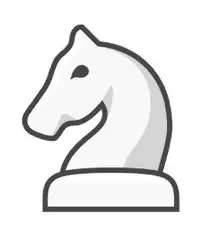
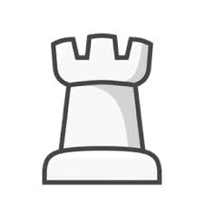
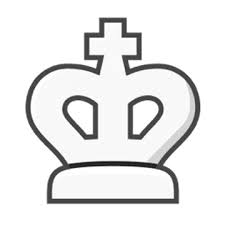

Information on the chess pieces
Pawn Smallest piece, moves forward 1 square (2 on first move), captures diagonally. Can promote upon reaching the opposite side. Controls the center and supports other pieces.
Bishop Tall with a pointed top. Moves diagonally any number of squares. Controls long diagonals; each bishop stays on one color.
Knight Shaped like a horse’s head. Moves in an “L” shape and can jump over pieces. Useful in closed positions and tricky to defend against.
Rook Looks like a castle tower. Moves any number of squares vertically or horizontally. Important for controlling open files and castling with the king
Queen Tallest piece next to the king. Moves any number of squares in any direction. Most powerful and versatile piece.
King Tallest piece with a crown. Moves one square in any direction. Most important piece; the goal is to checkmate the king. Can castle with a rook for safety.